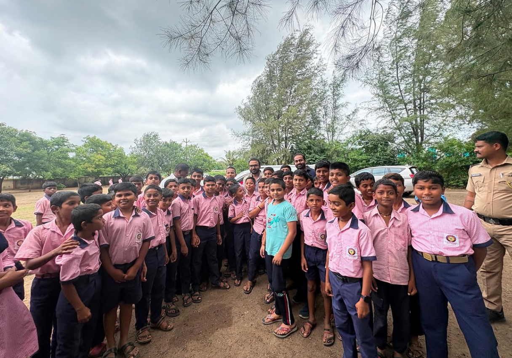
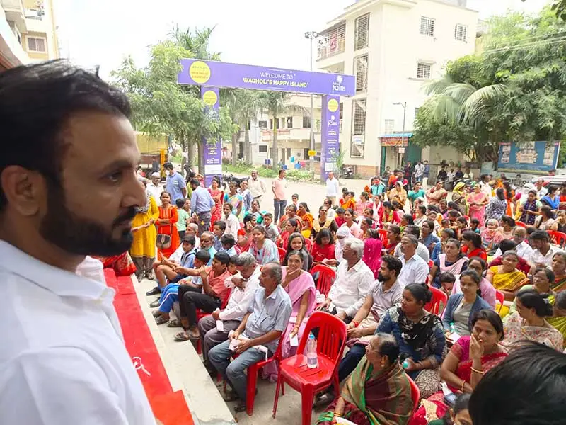
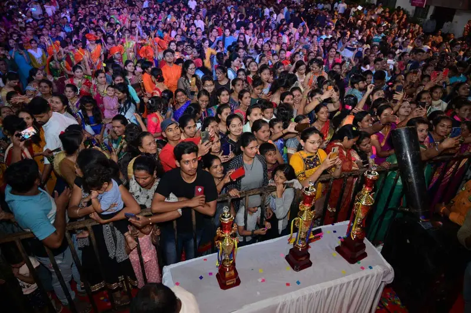

ज्ञानेश्वर कटके सोशल फाउंडेशन
आम्ही काय करतो
पाच क्षेत्रे, एकच वचन: मदत गरजूपर्यंत पोहोचेल.

शिक्षण
शिष्यवृत्ती, मोफत शालेय साहित्य आणि गुणवंतांचा गौरव.

आरोग्य
मोफत रुग्णवाहिका, आरोग्य तपासणी, रुग्णालय बिलात मदत.

महिला रोजगार
बचत गट, पीठ गिरणी, शिलाई मशीन.

मदतकार्य
गरजू कुटुंबांना अन्नधान्य व अत्यावश्यक वस्तू.

संस्कृती, क्रीडा व पर्यावरण
सण, क्रीडा स्पर्धा आणि वृक्षारोपण.
आमचा प्रभाव

संस्थापकांचे मनोगत
समाजाकडून आपल्याला जे मिळते, ते त्याला परत देणे ही आपली जबाबदारी आहे, या साध्या विश्वासातून फाउंडेशनची सुरुवात झाली. एक व्यक्ती सर्वांना मदत करू शकत नाही, पण अनेक हात एकत्र आले की मोठे बदल घडतात. मुलांना शिकता यावे, कुटुंबे निरोगी राहावीत आणि महिलांना काम मिळावे, यासाठी आम्ही काम करत राहू. तुम्हीही या प्रवासात सोबत या.
ज्ञानेश्वर (माऊली आबा) कटके
संस्थापक [मसुदा: ]
आमची कार्यपद्धती
तुमची देणगी किंवा विनंती कुठे जाते, ते सरळ सांगतो.
गरज ओळखतो
स्थानिक स्वयंसेवक, शाळा आणि ग्रामस्थ कुठे मदत हवी ते सांगतात.
विश्वस्त आढावा घेतात
प्रत्येक विनंतीचा विचार निष्पक्षपणे, गुणवत्तेनुसार होतो.
मदत थेट पोहोचते
मदत थेट व्यक्तीपर्यंत पोहोचते आणि आम्ही योग्य नोंदी ठेवतो.
आमच्यासोबत या
देणगी द्या, स्वयंसेवक व्हा किंवा गावातील शिबिरासाठी फाउंडेशनला बोलवा.
देणगी द्यास्वयंसेवक व्हा